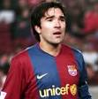

|  | Deco |
| Gender | Male |
| Ethnic | Portuguese |
| Job | Portuguese Footballer |
| Desc | A player at home in any era who blossomed under Jose Mourinho not once but twice. At home at No 10 Deco effortlessly controlled games for Porto and latterly Chelsea as a key cog in two of the Special One’s greatest sides |
Affiliation
| Org | Portugal National Team |
| Club as Player | Barcelona FC |
| Porto FC |
2013 10 20 Retrieve
[Deco on Iniesta] Iniesta definitely deserves a Ballon d’Or. Messi gets all the attention in the media because of his great performances, but all the players realise that Iniesta is absolutely amazing. If I had to compare him to someone, I would say Zinedine Zidane. Andres is phenomenal. The problem is that he has two animals ahead of him in Messi and Cristiano Ronaldo. There’s no denying that Cristiano is a beast as well
2016 02 13 Retrieve
[on Jose Mourinho] Mourinho had studied the game for a long time before, watching other teams, and the good thing was that everything we did in training happened in the game, which gave players confidence in the coach. When you have been prepared for each situation that could happen, it means you are more prepared than the other team
2016 02 14 Retrieve
[on Jose Mourinho] Mourinho brought something different (to Porto); he brought the ambition, because at that time in Portugal it was difficult for a club to think it could win the Champions League. Of course, Porto had won it in the past but it was a different time. [. . .] Mourinho brought this confidence to us; we had a fantastic team and he gave us that final push to believe it was possible
2016 02 15 Retrieve
[on Jose Mourinho] Mourinho, he’s a winner. It’s difficult for him to accept results that don’t go his way. [. . .] sometimes when we lost a game - which if you can remember wasn’t all that often in our time! - he would find it difficult to accept
2016 02 16 Retrieve
[on Jose Mourinho] As far as strategy goes Mourinho is the best coach I have worked with. He convinces you that if you do what he tells you to do it will bring results and it does. Working with Mourinho was incredible. I learned so much. It was a long time ago and some people say he has changed a lot, others that he hasn’t changed at all. He turned Madrid into a very effective team. They were different to Barcelona aesthetically but in terms of efficiency they were very effective. For everything that they say about him, he put Real Madrid at the same level as the best ever Barcelona side
2016 04 02 Retrieve
[Deco gave his views ahead of El Clásico] I would sign Luca Modric for Barça because his way of playing fits with the style that exists at the club. He is a footballer who looks like Andres Iniesta and Xavi due to his way of playing, he has a similar style. The forwards Christiano Ronaldo, Karim Benzema and Gareth Bale]</b> would not have a place at Barça
2016 06 25 Retrieve
[Deco on Ronaldinho] Ronaldinho was a natural with special ability. Whenever we gave the ball to him, the moves and goals were from a different world. He was far more gifted than Leo or Cristiano. When we did not know what to do, he would create that opportunity for you
2018 02 17 Retrieve
[Deco talks about Lionel Messi’s qualities] What I can say is that, when you have a player like Messi, be it any team in the world, you have a little advantage. Messi is not only a goalscorer, he creates, he defines the way the opponent defends their approach, their training. Coming up against Messi, things aren’t going to be easy. They are going to be a lot different for the opposition, because he’s unpredictable in one-on-one duels, and also with his passes. And obviously, the other team ends up very reactive to what he does on the field
2018 05 17 Retrieve
[Deco is not overly surprised to learn of talk of dressing room unrest at Manchester United] What happens in the dressing room is that sometimes he wants to push the players. It’s complicated to manage a big club like Man United. In Portugal there was a lot of pressure because when he arrived we had been two, three years without a title. But I think he is the same. The players changed, the time has changed. Maybe today the reactions from the players are different. If Man United brings him to be a coach they knew he was like that. He puts pressure on the players, the club. He wants to win, that’s that
It’s not normal in the Premier League, what Man City did. Man United had a good competition. Many times it’s not so good, but I think Man City did so well it would be difficult to repeat another season like that. Man United needs to stay in the right way, they have good players, maybe two or three new players for the next season. But I think they are doing well
2018 11 05 Retrieve
[Real Madrid were always going to struggle in the absence of Cristiano Ronaldo] I do not discuss whether they [Real] are playing well or badly, but did people really think they would be the same without Cristiano? He is the best player in the history of Madrid and it is normal that the team suffers.
[When asked whether Barcelona would face similar transitional issues when Messi retires] I do not know, but there is a difference: Cristiano’s was quite sudden, it was not completely natural, it did not end little by little and that’s why the club was not prepared
2018 11 05b Retrieve
[Pep Guardiola was fortunate to inherit a Barcelona team made up of pioneers with a winning ethos] I remember that when I arrived at Barca, people were crazy about winning a title, even if it was a Copa del Rey. We managed to reverse that trend, and then the club had the ability to continue winning. If not, today we would talk about the Champions of Paris as they once talked about Wembley ‘92. After us, Barca had the luck, which in reality is not luck but work, to combine three things: a young coach with new ideas, the best player in history and the best generation of Spanish football born precisely at Barca
Yes, Barca today is very different from fifteen years ago. Today, Barca is accustomed to winning. The league no longer has the same sense as before. Now, if you win league and cup it is fine, but it’s not perfect. And that is the merit of this generation; Leo’s leadership in recent years and with Xavi, Iniesta, Busquets, Piqué, and company.
We started, but they set the bar very high
2018 11 20 Retrieve
[Ex-Barcelona and Chelsea midfielder Deco fondly recalls his time alongside Ronaldinho at Camp Nou] From the outset, it is clear that Leo and Cristiano are the greatest. Especially because no one thought they could take so many years to this level, but the one that impressed me most despite not being so decisive was Ronnie. For me, he will always be the best
We met in Barcelona and immediately connected with him, the moments I lived with him are difficult to compare to anything. It was magical
2019 05 22 Retrieve
[Barcelona could still win the domestic double again this season] I don’t know the future because [at] Barcelona there’s a lot of pressure. When the competition started, one of my favourites to win was Liverpool because I knew they were strong, stronger than last season. But they had problems in the beginning, the group phase, and then they got better [later] in the competition. Of course, after 3-0 in Camp Nou, no one would have expected that without two of their most important players - [Mohamed] Salah and [Roberto] Firmino - that Liverpool could do that. It was difficult for Barcelona because it was a very tough defeat - a loss against Liverpool, 4-0, is not normal.
I know in Barcelona there’s a lot of pressure, every year they need to win. I don’t know what’s happened. It’s difficult, not just for Valverde but every coach who would be there in that moment
- 2019 06 26
- Alexander Hleb says Barcelona sold Ronaldinho and Deco to protect Lionel Messi because the pair would often turn up to training drunk
2020 03 25 Retrieve
[Former Portugal international Deco believes Scholes above Lampard and Gerrard] I played with and against so many fantastic players in midfield like Gerrard. I had the opportunity to play with Lampard together at Chelsea
I think, because he was a different type of player to all other types of English midfielder, Paul Scholes was the best player that I saw playing for an English midfield and one of the best players in the world.
There are not so many players with this style because I think most of the players are box-to-box, not about controlling the game, keeping the balance of the team.
Maybe it’s the generation, but I think this kind of player always exists. England has a lot of fantastic players. What I say is that in midfield, with his style, Scholes could play at any club